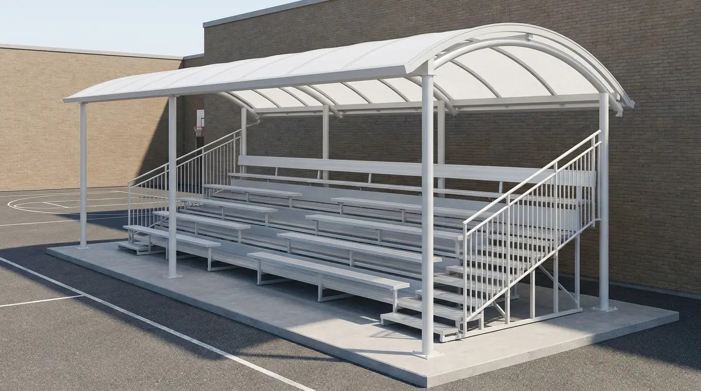

Programa LEEN, CEAP y FAEB: ¿con cuál pago las gradas de mi escuela?
El 80% de los directores que nos escriben confunde estos tres nombres y termina perdiendo meses. La respuesta corta: LEEN sí cubre gradas, CEAP es el comité que lo ejecuta, y FAEB ya no existe desde 2014. Esta es la guía 2026 con paso a paso y plantilla de acta lista para imprimir.

- LEEN sí cubre gradas — las reglas de operación permiten equipamiento e infraestructura escolar, y las gradas entran ahí. Se aprueba en asamblea y se ejecuta vía el CEAP.
- CEAP no es un programa — es el Comité Escolar de Administración Participativa: 3 firmantes (presidente, tesorero, vocal de contraloría) que administran la cuenta bancaria de LEEN.
- FAEB ya no existe desde 2014 — se dividió en FONE (solo nóminas) y FAM (infraestructura, pero llega a la Secretaría estatal, no a la escuela).
- Solo la Grada INIFED ($105,000 MXN + IVA) es legal en escuela pública con fondos federales auditables.
Pocas veces una llamada al WhatsApp de Sportmaster Gradas es tan urgente como cuando un director, una madre de familia o un tesorero del comité escolar pregunta: "¿con qué fondo puedo comprar legalmente la grada de mi escuela?". La respuesta correcta vale literalmente cientos de miles de pesos y meses de gestión.
Y la confusión es real: LEEN, CEAP, FAEB, FONE, FAM. Son cinco siglas que circulan en boca de directivos, supervisores y padres como si fueran intercambiables. No lo son. Cada una tiene una función específica y una sola de ellas hoy paga gradas de manera limpia y auditable.
Programa Federal¿Qué es el programa LEEN?
LEEN son las siglas de La Escuela Es Nuestra. Es un programa federal vigente, iniciado en 2019 por el gobierno de Andrés Manuel López Obrador y continuado por la administración de Claudia Sheinbaum, operado por la Secretaría de Bienestar (no por la SEP, contrario a lo que la mayoría piensa).
El programa transfiere recursos económicos directo a la escuela de educación básica pública —preescolar, primaria y secundaria— sin pasar por la secretaría de educación estatal, la supervisión ni ningún intermediario. La cobertura nacional actual ronda las 178,000 escuelas beneficiadas en el país.
¿Qué es el CEAP y por qué no es lo mismo que LEEN?
El CEAP es el Comité Escolar de Administración Participativa. Y aquí está la confusión más cara del país: mucha gente lo busca como si fuera un programa aparte —"el programa CEAP"— cuando en realidad es el órgano que recibe, administra y comprueba los recursos de LEEN.
El CEAP se integra en asamblea escolar y queda formado por tres firmantes elegidos democráticamente, casi siempre madres y padres de familia:
- Presidente · coordina las decisiones y representa al comité.
- Tesorero · administra y comprueba los recursos.
- Vocal de Contraloría Social · vigila que los recursos se ejerzan correctamente.
El director de la escuela participa como vocal pero sin firma de cuenta bancaria. Eso protege al programa de la corrupción tradicional donde el director controlaba todo. Las firmas son mancomunadas, lo que significa que ninguno de los tres puede mover dinero sin la firma de los otros dos.
Para que la compra de la grada sea legal: el CEAP debe levantar acta en asamblea aprobando la adquisición, conservar facturas digitales (CFDI 4.0) a nombre del comité, y guardar evidencia fotográfica antes/después de la obra.
FAEB: el fondo que ya no existe (y por qué la gente lo sigue buscando)
El FAEB —Fondo de Aportaciones para la Educación Básica y Normal— fue durante años el principal mecanismo federal para financiar educación pública en los estados. Pero desapareció en 2014 con la reforma educativa de Enrique Peña Nieto.
Si alguien hoy te dice "págalo con FAEB", está hablando con información desactualizada en más de una década. Esto es lo que pasó realmente con ese fondo:
Fondo federal único que cubría nóminas docentes, gasto operativo e infraestructura escolar básica. Se transfería a las secretarías de educación estatales (IECC, IEEPO, SEPyC, etc.).
La reforma educativa lo elimina y reparte sus funciones entre el FONE y el FAM, separando lo que antes era un solo fondo.
Fondo de Aportaciones para la Nómina Educativa y Gasto Operativo. Paga maestros y servicios. No sirve para comprar gradas.
Fondo de Aportaciones Múltiples. Sí cubre infraestructura educativa, pero se ejerce desde las secretarías estatales (IECC, IEEPO, etc.). No llega directo a la escuela.
LEEN vs CEAP vs FAEB vs FAM · tabla comparativa
Para resolver la duda en una sola vista, esta es la fotografía 2026 de los cuatro nombres más confundidos cuando se habla de pagar gradas en una escuela pública mexicana:
| Sigla | Qué es | Llega a | Monto típico | ¿Sirve para gradas? |
|---|---|---|---|---|
| LEEN | Programa federal vigente (Bienestar) | Cuenta bancaria de la escuela vía CEAP | $200K – $600K MXN | Sí |
| CEAP | Comité que administra LEEN (3 firmantes) | Es el órgano, no recibe dinero aparte | — | Sí (vía LEEN) |
| FAEB | Fondo extinto desde 2014 | — | — | No existe |
| FONE | Reemplazo parcial de FAEB | Secretarías de Educación estatales | Variable | No |
| FAM | Reemplazo parcial de FAEB (infraestructura) | Secretarías de Educación estatales | Variable | Indirecto |
¿LEEN realmente cubre la compra de gradas?
Sí. Las reglas de operación de La Escuela Es Nuestra establecen cinco rubros legítimos de aplicación del recurso: mantenimiento, rehabilitación, mejoramiento, equipamiento y construcción menor de la infraestructura escolar.
Una grada deportiva metálica con techo cabe sin ambigüedad dentro de equipamiento y construcción menor de infraestructura escolar deportiva. Lo confirman cientos de compras documentadas a lo largo del país desde 2019, en escuelas que invirtieron parte de su recurso LEEN en techar cancha, comprar porterías, o levantar tribunas para los actos cívicos.
Ojo: no cualquier grada es legal en escuela pública. Para que la compra sea auditable y no se rechace en la rendición de cuentas, el modelo debe contar con memoria de cálculo firmada por estructurista y cumplir normativa INIFED. En el catálogo Sportmaster, la única que cumple ese requisito hoy es la Grada 50 Personas Techo Curvo Policarbonato 6mm INIFED a $105,000 MXN + IVA.
Paso a paso para aprobar la compra de gradas con LEEN
Este es el flujo que han seguido las escuelas que ya recibieron sus gradas Sportmaster con recursos LEEN. Cinco pasos, en este orden, sin saltarse ninguno:
Convocar asamblea escolar
El director, en coordinación con el CEAP, convoca a la asamblea de la comunidad educativa (padres, maestros, alumnos representantes). En el orden del día debe aparecer explícitamente: "aprobación de adquisición de gradas deportivas con recursos LEEN".
Aprobar en acta el modelo y proveedor
La asamblea vota la compra. El acta debe especificar: bien adquirido (grada de capacidad X), proveedor seleccionado, monto total estimado, justificación del uso, y plazo de ejecución. Se firma por mayoría.
Solicitar cotización formal con ficha técnica
El CEAP solicita a Sportmaster la cotización por escrito que incluya: precio, ficha técnica del modelo INIFED, memoria de cálculo, RFC del proveedor y datos para facturar a nombre del comité.
Transferir desde la cuenta del CEAP
El pago se realiza desde la cuenta bancaria del comité con firmas mancomunadas del presidente, tesorero y vocal de contraloría. Anticipo 50% al levantar pedido, 50% contra entrega instalada.
Comprobar con facturas, acta y evidencia
El tesorero archiva: CFDI 4.0 a nombre del CEAP, comprobante de transferencia, acta de asamblea, ficha técnica entregada y fotografías antes/después de la obra. Es lo que pedirá la contraloría social y la auditoría.
Plantilla de punto de acta de asamblea (copia y adapta)
Este es un texto sugerido para incluir en el acta de la asamblea escolar. Está redactado para ser legalmente sólido bajo las reglas de operación LEEN y suficiente para pasar auditoría. Reemplaza solo los campos marcados:

¿Cuánto cubre LEEN según la matrícula de tu escuela?
El monto que recibe cada plantel por ciclo depende del número de alumnos matriculados. Estas son las referencias publicadas en las reglas de operación 2026 y lo que esa cifra alcanza realmente del catálogo Sportmaster:
| Matrícula | Monto LEEN | Grada Sportmaster que cabe |
|---|---|---|
| Menos de 50 alumnos | ~$200,000 MXN | Grada 35P Lona ($78K) + porterías + accesorios |
| 51 – 150 alumnos | ~$250,000 MXN | Grada 50P INIFED ($105K) con margen para flete |
| 151 – 300 alumnos | $300,000 – $400,000 MXN | Grada 50P INIFED ($105K) + segunda grada estándar |
| Más de 300 alumnos | $400,000 – $600,000 MXN | 2 gradas INIFED enfrentadas (tribuna doble F11) |
Los montos LEEN son referenciales y publicados en reglas de operación oficiales año con año. La cifra exacta del ciclo se confirma en la convocatoria publicada por la Secretaría de Bienestar. Y recuerda: la base de concreto de la grada NO entra en el precio Sportmaster, esa la realiza el contratista local con materiales propios.
Alternativas si LEEN no alcanza para la grada que necesitas
Si tu escuela tiene matrícula pequeña, o si quieres una grada más grande que la que cubre el LEEN, hay cuatro caminos complementarios que han funcionado en escuelas atendidas por Sportmaster:
Patronato escolar o asociación civil
Constituir un patronato con figura legal propia que reciba donativos y aportaciones de padres de familia. Permite acumular recursos a lo largo del ciclo sin restricciones del calendario LEEN.
Cuotas voluntarias por familia
Aprobadas en asamblea con consentimiento explícito (NO obligatorias), recaudadas por el comité con transparencia. Útiles para complementar el monto LEEN o cubrir flete e instalación.
Donativo deducible de empresa local
Empresas con donataria autorizada pueden donar a escuelas y deducir 100%. Acerca a constructoras, embotelladoras o agroindustrias locales con propuesta concreta (un modelo, una grada, una placa).
Alianza con el municipio
Muchos municipios tienen programas de coinversión con escuelas para infraestructura deportiva. Direcciones de Obras Públicas o de Desarrollo Social aportan parte y la escuela el resto desde su LEEN.
Te enviamos cotización formal con ficha técnica INIFED y memoria de cálculo lista para incluir en el expediente del CEAP. Respuesta en menos de 1 hora.
Los 5 errores más comunes al comprar gradas con LEEN
Cada uno de estos errores le ha costado tiempo, dinero o sanciones a alguna escuela que conocemos. Vale la pena revisarlos antes de firmar nada:
Pedir factura a nombre de la escuela, no del CEAP
El recurso LEEN está en la cuenta del comité, no de la escuela. La factura debe ir a nombre del CEAP con el RFC del comité. Si llega a nombre de la escuela o del director, no comprueba correctamente y la auditoría la rechaza.
Comprar grada sin certificación INIFED
Algunos proveedores ofrecen gradas más baratas "iguales que la INIFED". No lo son. Sin memoria de cálculo firmada y sin certificación, no pasa auditoría y el director puede ser observado por la contraloría social.
Olvidar el acta de asamblea
El acta es el documento que legaliza el uso del recurso. Sin acta firmada por la mayoría de la comunidad, el CEAP ejerció dinero sin autorización, aun cuando la compra haya sido perfectamente honesta.
Pagar la base de concreto desde LEEN sin estimarla
La base de cimentación la realiza el contratista local con sus propios materiales. Si quieres pagarla con LEEN, debes presupuestarla aparte en el acta. Mezclarla con el precio Sportmaster confunde la comprobación.
Creer que FAEB todavía existe
Algunos manuales y asesorías informales todavía mencionan FAEB. Si te asesoran con ese fondo en 2026, busca segunda opinión: el fondo se extinguió hace más de una década y cualquier gestión basada en él pierde tiempo y credibilidad.
Preguntas frecuentes sobre LEEN, CEAP y FAEB
¿El programa LEEN sí cubre la compra de gradas?
Sí. Las reglas de operación de La Escuela Es Nuestra permiten usar los recursos en mantenimiento, rehabilitación, mejoramiento, equipamiento y construcción menor de infraestructura escolar. Las gradas y áreas deportivas entran dentro de equipamiento e infraestructura, siempre que la asamblea escolar lo apruebe en acta y el modelo cumpla normativa INIFED.
¿Qué diferencia hay entre LEEN y CEAP?
LEEN (La Escuela Es Nuestra) es el programa federal que transfiere recursos a la escuela. CEAP (Comité Escolar de Administración Participativa) es el órgano integrado por padres de familia y el director que recibe, administra y comprueba esos recursos. CEAP no es un programa: es el comité que ejecuta LEEN.
¿Puedo pagar las gradas con FAEB en 2026?
No. El FAEB (Fondo de Aportaciones para la Educación Básica y Normal) dejó de existir en 2014. Se transformó en dos fondos:
- FONE: paga solo nómina docente y gasto operativo.
- FAM: financia infraestructura, pero se ejerce desde las secretarías estatales y no llega directo a la escuela.
Hoy, para comprar gradas en escuela pública lo más limpio es LEEN vía CEAP.
¿Cuánto dinero recibe una escuela con LEEN?
El monto depende de la matrícula del plantel. Como referencia:
- Menos de 50 alumnos: alrededor de $200,000 MXN.
- 51 a 150 alumnos: alrededor de $250,000 MXN.
- 151 a 300 alumnos: entre $300,000 y $400,000 MXN.
- Más de 300 alumnos: entre $400,000 y $600,000 MXN.
El monto exacto del ciclo se confirma en las reglas de operación publicadas por la Secretaría de Bienestar.
¿Qué tipo de grada puedo comprar con fondos federales?
Para escuela pública con fondos federales (LEEN, FAM o cualquier recurso público auditable) la única grada certificada en el catálogo Sportmaster es la Grada 50 Personas Techo Curvo Policarbonato 6mm INIFED, con precio público de $105,000 MXN más IVA. Cuenta con memoria de cálculo firmada y cumple las 8 normativas exigidas para obra pública. Las demás gradas estándar son legales para escuelas privadas y clubes, pero no para obra pública auditable.
¿Quién aprueba la compra de gradas con recursos LEEN?
La asamblea escolar de la comunidad educativa, integrada por padres de familia, maestros y el director. Se debe levantar acta firmada donde se especifique el bien adquirido, el proveedor, el monto y la justificación. El CEAP es quien ejecuta el pago desde la cuenta bancaria del comité, con firmas mancomunadas del presidente, tesorero y vocal de contraloría.
Conclusión
Pagar las gradas de una escuela pública en México en 2026 ya no es un misterio cuando tienes claras las tres siglas correctas: LEEN es el programa que aporta el dinero, CEAP es el comité que lo administra, y FAEB es una sigla que conviene olvidar porque dejó de existir hace más de una década. Con ese mapa mental, la asamblea, el acta y la compra se vuelven cuestión de seguir cinco pasos en orden.
Y si tu escuela está por aprobar la compra: insiste en una grada con certificación INIFED y memoria de cálculo firmada. Es el único filtro que protege al director, al CEAP y a la comunidad escolar cuando llegue la auditoría. El ahorro de comprar una grada genérica se paga doble cuando la contraloría observa el expediente.
¿Listo para cotizar la grada INIFED de tu escuela?
Mándanos por WhatsApp el nombre y CCT de la escuela, la matrícula aproximada y la ciudad. Te enviamos cotización formal con ficha técnica INIFED y memoria de cálculo lista para incluir en el expediente del CEAP. Respuesta en menos de 1 hora.